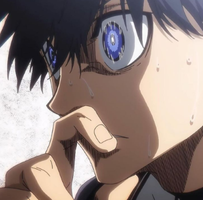
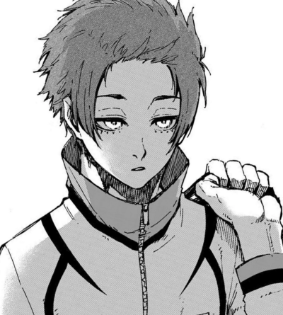

O futebol é um grande esporte, que pode interessar a qualquer pessoa, seja apenas para assistir jogos ou para entrar no campo e praticá-lo. No entanto, para se tornar um atleta melhor (chegando até à profissionalização), é preciso começar cedo e se esforçar bastante. A boa forma física é fundamental, assim como o desenvolvimento tático e técnico; porém, o mais importante é ter paixão e entusiasmo pelo futebol. Treinar é o aspecto-chave para se tornar um jogador habilidoso, mas é preciso garantir que os pontos certos estejam sendo desenvolvidos.
Chame os amigos para bater uma bola na quadra do prédio, em um campo alugado ou faça testes para entrar nas categorias de base de um clube. Outra opção é entrar para uma escolinha de futebol, se as outras não forem viáveis. É impossível se tornar um jogador melhor se não treinar com frequência, afinal, não existem atalhos para se tornar um profissional além de jogar e praticar regularmente. Experimente realizar testes nos melhor times da região. Quanto melhores os técnicos e os adversários, mais rapidamente os jovens atletas se desenvolvem. Caso não tenha com quem jogar (e nem entrar nas categorias de base de um clube), saia de casa e treine 100 chutes ou passes contra uma parede. Pratique dribles no jardim de casa e apure a técnica; tudo que é necessário para se tornar um melhor futebolista é uma bola e determinação para melhorar.
Os profissionais precisam tomar decisões rapidamente, seja para fazer o passe, chutar ao gol ou driblar o adversário, tudo em questão de milésimos de segundos. A melhor maneira de tornar-se um bom jogador é trabalhando na "tomada de decisões", que devem ser rápidas e precisas. Não segure demais a bola. Após dar de um a três toques rápidos na bola, é preciso passar ou chutá-la. Quanto mais ela ficar nos pés do mesmo jogador, mais tempo os defensores adversário terão para se posicionar corretamente. Para realizar uma jogada individual, é preciso adotar um ritmo adequado. Faça com que o marcador tenha uma reação (tentar desarmar o atacante, por exemplo) em vez de permitir que ele posicione-se bem. Não tenha pressa. Não há como correr mais que a bola e fazer com que ela chegue rapidamente na área adversária. Logo, ela precisa ser movimentada, através de inversões de bola para companheiros do outro lado do campo ou passes em profundidade, que confundem a marcação. Ao perder a bola ou não alcançar um passe, tente imediatamente roubá-la ou se posicionar para interceptar o passe.
Os craques nunca são "mancos", ou seja, utilizam apenas o pé dominante para chutar e passar a bola. Se esse é o seu caso, os bons zagueiros tentarão impedir que a bola "caia" no pé "bom", bloqueando a possibilidade de passes e chutes fáceis, forçando o uso do outro pé e dificultando qualquer ação. Sempre que puder, desenvolva o potencial do pé "ruim", mesmo se no começo nada der certo. Jogadores ambidestros são preocupação para qualquer zaga.

Independentemente da posição em campo, é muito importante roubar bolas. A marcação individual (o um contra um) é um dos aspectos fundamentais para qualquer bom jogador de futebol, além do passe e do chute. Para treinar, basta jogar contra um amigo, revezando quem ataca e quem defende. Os bons defensores no "mano a mano" devem ter: Posicionamento correto. Dobre um pouco as pernas, apoiando-se na parte em que há o ligamento entre a planta do pé e os dedos. Force o adversário a tomar uma direção. Coloque um pé para frente e gire o corpo de forma que incentive o atacante a ir para uma direção – geralmente, para onde estão os zagueiros ou para a lateral – fazendo com que ele domine a bola com o pé que apresenta maior dificuldade, seja para driblar e para passar ou chutar a bola, por exemplo. Não dê o bote se não for necessário. Um bom marcador deve saber cercar o adversário e dificultar a capacidade de decisão do mesmo; a tentativa de desarme deve ser feita apenas se a oportunidade for boa – o que também envolve a capacidade de decisão do zagueiro –, como quando o atacante adianta demais a bola ou dá a chance de desarme. O importante é não ser desesperado em desarmar, pois o outro jogador ou passará com facilidade pela marcação ou acabará sofrendo a falta. Atenção ao movimento dos quadris. Essa parte do corpo quase sempre "telegrafa" para onde o adversário está indo. Como os pés se movem rapidamente (especialmente em dribles) e a direção da cabeça e ombros pode até ser utilizada para enganar o zagueiro, o quadril, que é mais ou menos onde está o centro de gravidade, é mais lento e pode ser utilizado para descobrir qual direção que o atacante tomará.
Use os treinos para melhorar os pontos fracos e não para ficar se exibindo. O treino é o momento que os atletas têm para se tornarem jogadores melhores, não para que fiquem mostrando seus pontos fortes e realizando malabarismos com a bola. Durante os treinos, os erros devem ser cometidos (pelo menos em maior quantidade do que no jogo), o pé "ruim" deve ser fortalecido, além de analisar o desempenho ao jogar em uma posição em que não está acostumado (testar, por exemplo, um zagueiro na lateral ou um armador como atacante) e também desenvolver entrosamento com os companheiros, que como consequência, fará com que melhores combinações de passe e jogadas para defender e atacar ocorram. Nem os melhores jogadores se acanham com a possibilidade de errar muito durante o treino: o importante é não cometer equívocos na hora do jogo.
Uma excelente maneira de aprender é assistindo jogadores bons e consagrados, principalmente os que atuam na mesma posição. Tente analisar tudo que eles fazem em campo; como se posicionam quando estão com a bola? E quando estão sem? Com que frequência sobrem ao ataque ou voltam para ajudar na defesa? Que tipo de passes eles dão?[5] As ligas europeias, como a La Liga (Espanha), a Premier League (Inglaterra), o "Calcio" (Itália) e a Bundesliga (Alemanha) têm os melhores jogos, com atletas de muita habilidade e inteligência. Torneios internacionais, como a Copa do Mundo e a Eurocopa também são ótimos. Compre ou peça emprestado DVDs e fitas de futebol. Elas poderão ensinar fundamentos e táticas detalhadamente, ajudando jogadores que desejam aprofundar o conhecimento que possuem, além de serem bastante didáticas e elogiadas por jogadores de todo o mundo.
O técnico está na equipe para isso e geralmente pode ver aspectos da partida e de atletas adversários que os seus comandados não conseguem durante a disputa. Por isso, aprender a ouvir e obedecer as instruções do técnico evitará que você repita os mesmos erros constantemente, além de ajudar a encontrar e trabalhar os pontos fracos.[6] Uma ou duas vezes por temporada, pergunte ao técnico o que pode ser feito para melhorar e ajudar a equipe. Peça exemplos de fundamentos ou até ideias para treinar por conta própria; é uma excelente maneira de encontrar novos caminhos para aprimorar a parte técnica. Contrate os serviços de um técnico ou preparador individual para melhorar ainda mais. Muitos técnicos qualificados e jogadores das categorias de base praticam individualmente, fora do horário de treino. A atenção direta de um profissional a apenas um atleta, focando nas áreas onde ele precisa melhorar, é um caminho ótimo para rapidamente tornar-se um bom jogador.
Treine o controle e a manutenção da posse de bola em um campo (ou qualquer local aberto) de cerca de 27 m, trocando de velocidade e o local do pé utilizado para carregá-la. A bola deve ser mais ou menos uma "extensão" natural do pé, parando, movendo e mudando de direção sempre que o jogador assim quiser, mostrando que ele tem total controle sobre ela. Algumas técnicas de treino desse fundamento são: Driblar cones: coloque cones ou pequenos objetos em zigue-zague e carregue a bola, passando por cada um deles e controlando a velocidade sempre que puder. O objetivo é passar por todos os cones sem que a bola toque neles e sem "pulá-los". Ao aperfeiçoar o controle de bola, aumente a velocidade. Saiba fazer embaixadinhas: apesar de não ser fundamental no futebol em si, conseguir fazer embaixadinhas melhora o controle de bola e a técnica. Para isso, basta usar o corpo (menos os braços e a mão, é claro) para manter a bola no ar o mais tempo possível, sem que ela toque no chão. Tente fazer 10 embaixadinhas, no começo, e depois 20, 50, 100 e assim por diante.
É necessário ter muita técnica e habilidade, mas ficar de cabeça erguida é um aspecto básico no futebol que todos os atletas devem sempre aperfeiçoar, principalmente os jovens. Os bons jogadores sabem sempre em que lugar do pé a bola está sem precisar olhá-la, possibilitando que realizem um bom passe ou chute. Todos acabam olhando para a bola ocasionalmente (e automaticamente), mas quanto mais o atleta estiver observando a movimentação de companheiros e adversários – com a bola bem controlada – melhor ele será. Tente adquirir o hábito de levantar a cabeça em todas as atividades de controle de bola durante o treino.
Exercícios simples e rápidos são ótimas maneiras de melhorar a técnica de controle de bola, mesmo que não sejam feitos durante a partida. Em todos eles, os pés devem mover-se rapidamente ao mesmo tempo que a bola fica em posse do jogador.[9] Com a parte interna dos dois pés, passe a bola de um lado para outro. Com rapidez e movimentos curtos, passe a bola do pé direito para o esquerdo e vice-versa. Coloque a bola em movimento sem perder o controle dela. Pare-a em frente do pé e coloque-a em movimento dando um "tapinha" com o bico da chuteira e com a parte de baixo do pé sem muita força, para que ela não ganhe muita velocidade e esteja sempre sob controle. Apoie-se com a parte que liga a planta do pé aos dedos e mantenha os joelhos levemente dobrados. Passe o pé por cima da bola. Ponha o pé em cima da bola e, com a sola role-a para a direita. Depois disso, deixe o pé direito novamente no centro e passe a bola para o pé esquerdo e repita o exercício. Você pode também fazer o contrário, rolando a bola para dentro, com a parte interna dos pés e parando-a no centro. Essa atividade, apesar de ter um grau maior de dificuldade, auxilia bastante no desenvolvimento de controle da bola.
Os melhores jogadores sabem que o futebol é um esporte coletivo, ou seja, ninguém ganha jogando sozinho. Ser "fominha" apenas fará com que você perca a bola, logo, é imprescindível treinar a capacidade de passe e melhorar a habilidade. Os passes rápidos devem ser feitos com um simples toque na bola (não pare-a quando estiver vindo em sua direção), encontrando um companheiro em boas condições de gol ou livre para avançar ao campo de ataque após qpenas dois toques.[11] Uma boa maneira de treinar esse fundamento é ficar de frente a uma parede. Se o passe – que deve ser sempre de primeira – for ruim, mais difícil será para "receber o passe" da parede e tocar de volta. Chame um amigo (que deve ser um centroavante), para ajudar no aperfeiçoamento dos cruzamentos. Cobre escanteios ou faltas um pouco mais perto da área e tente colocar a bola na cabeça dele. Assim que ele começar a correr para obter espaço (como se estivesse sendo marcado), cruze e facilite o gol para o centroavante. Reflita um pouco sobre seus pontos fracos e nas áreas em que deve melhorar. Por exemplo, se quiser melhorar a finalização, separe dois ou três dias para ir ao campo e treinar apenas chutes ao gol. Ao sentir que melhorou nesse quesito, use os mesmos períodos momentos para desenvolver o controle de bola, os passes, cruzamentos e outros aspectos.